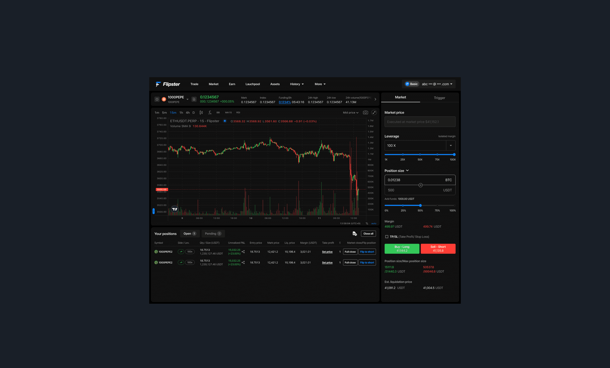
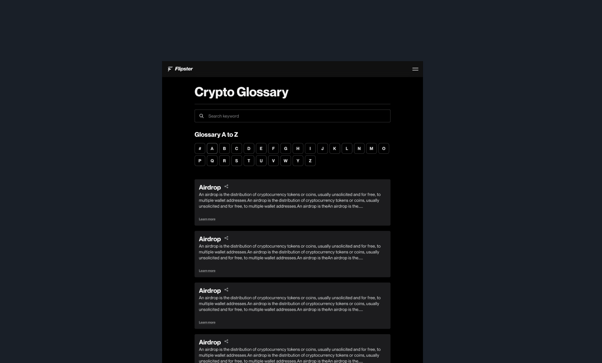
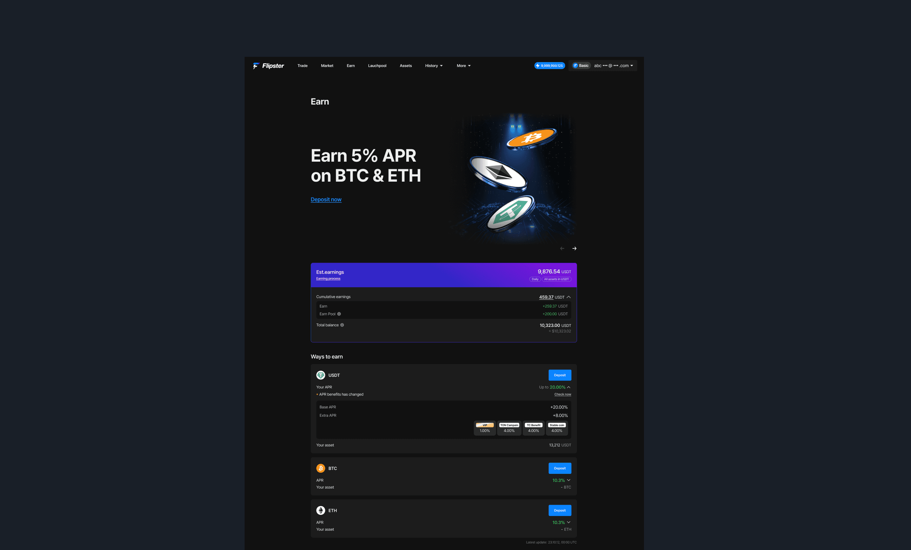
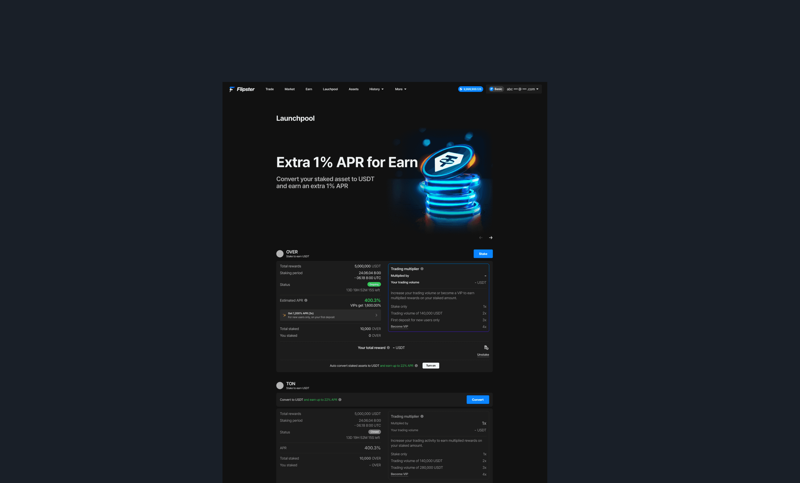
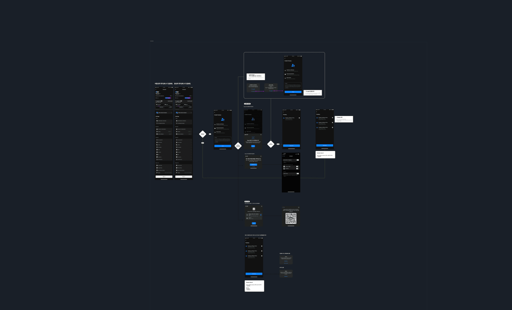

Flipster is a perpetual futures crypto exchange built for experienced traders. As the platform scaled, it began attracting a broader user base — including those new to derivatives trading, or users familiar with traditional finance and spot trading but encountering futures-specific concepts for the first time.
Two patterns stood out from analytics. First, first-trade completion rates among new users were low. Drop-off within the trading interface clustered around moments when key terminology appeared — Funding Rate, Mark Price, Liquidation Price. When users hit an unfamiliar term, they either searched externally and didn't return, or abandoned the trade entirely. This wasn't limited to crypto beginners; even users with traditional finance backgrounds showed the same friction when encountering derivatives-specific concepts.
Second, Earn feature activation was well below potential. Earn offered yield on deposited assets without requiring active trading — a low-barrier entry point for users not yet ready to trade. But expected returns weren't communicated in a way that felt tangible, and comparing products was difficult. Traffic to the page wasn't converting into action.


I was the designer for the Activation Squad — one of five squads within Flipster's design organization — and the sole designer within the squad. My scope was end-to-end: from problem framing through final design, covering five product areas across desktop web and mobile web.
The five workstreams were homepage redesign, Earn system overhaul, Crypto Glossary, Passkey authentication, and Delisting screens. On the surface these look like separate features. They're all solving the same underlying problem from different angles: reducing the friction between a user understanding something and taking action on it.
Perpetual futures trading comes with a vocabulary that doesn't map cleanly onto traditional finance or spot trading. Terms like Funding Rate, Mark Price, Liquidation Price, and Airdrop create a wall for anyone outside the crypto-native audience. When users encountered these terms mid-flow, they left the platform to search externally — breaking momentum at the exact moment a decision needed to be made.
Keep users in the flow. The Glossary needed to be accessible from within the interface at the moment a term appeared — not after the fact, and not through an external link.
Translate, don't define. Instead of textbook-style financial definitions, each entry was written to answer the question a user would actually have in context: what does this mean for my trade, right now?
Example: "Liquidation Price" → "The price at which your position is automatically closed. If the market reaches this level, your entered margin is consumed."
The Glossary was designed not as a static dictionary, but as a learning layer — something users would build familiarity with organically through repeated use of the platform, without ever having to leave it.

Earn System Overhaul
The Earn tab existed, but didn't convert. Users couldn't quickly grasp how much they'd earn on a given deposit, product comparison was difficult, and the expected return never felt concrete enough to prompt action.
I surfaced APR prominently at the top of the page — leading with the number itself as the primary hook ("Earn 5% APR on BTC & ETH"). A comparison table layout showed APR, conditions, and duration across products at a glance. The "Deposit now" CTA was repositioned directly adjacent to yield information, collapsing the distance between understanding and acting. A dashboard view displayed currently deployed assets and accumulated earnings in one place.
"Users could compare earning options at a glance. The redesigned interface translated technical concepts into familiar language, enabling users to act confidently without external help."
Passkey Registration — Reframing Security as Convenience
Password-based login created friction at re-authentication — a recurring pain point on a platform where session timeouts are frequent. Beyond UX, crypto users carry heightened anxiety around account security, and passwords represent a known vulnerability.
I designed the passkey registration flow using biometric authentication (fingerprint / Face ID) as the primary method. Rather than replacing password login immediately, I designed a parallel transition period where both methods coexist — forcing a sudden change on users managing financial assets would generate resistance. At the end of the flow, users see a clear confirmation: "You can now log in with just your fingerprint." The goal was for enhanced security to feel like a gain in convenience — not a new thing to learn.

Homepage Redesign
The existing homepage was optimized for experienced traders who arrived knowing what they wanted. As Flipster's audience widened, the homepage needed to serve as a genuine first impression for users with varied backgrounds — but its information hierarchy and entry paths weren't built for that.
I restructured the page to lead with Flipster's core value proposition — accessible trading and yield opportunity — immediately on load. Designed parallel entry paths: experienced users could move directly into trading, while newer users were routed toward lower-barrier features like Earn.
Delisting Screens
When a coin was delisted, there was no dedicated UI to communicate what was happening. Users encountering a suddenly non-tradable asset had no context — many assumed it was a bug.
I designed a progressive status screen that communicated the delisting timeline across three stages: confirmed, grace period active, and trading closed — including clear guidance on what users could do with open positions at each point. The priority was eliminating ambiguity: users needed to understand both why trading had stopped and what actions were still available to them.
These five workstreams look like separate features on the surface. But they're all solving the same underlying problem from different angles: reducing the friction between a user understanding something and taking action on it.
The Glossary lowers the language barrier. The Earn redesign makes potential returns tangible. Passkey reframes security as ease. The homepage and Delisting screens handle first impressions and failure states — the moments that determine whether a user trusts the platform enough to stay.
Working within a squad-based org meant each team owned its domain, but the quality of the overall product experience depended on those domains feeling coherent together. Making sure my squad's work aligned with the design decisions being made elsewhere — and that the same underlying principles were being applied consistently — was as important as the work itself.
Beyond individual features. A design framework for building trust in a platform where trust is everything.